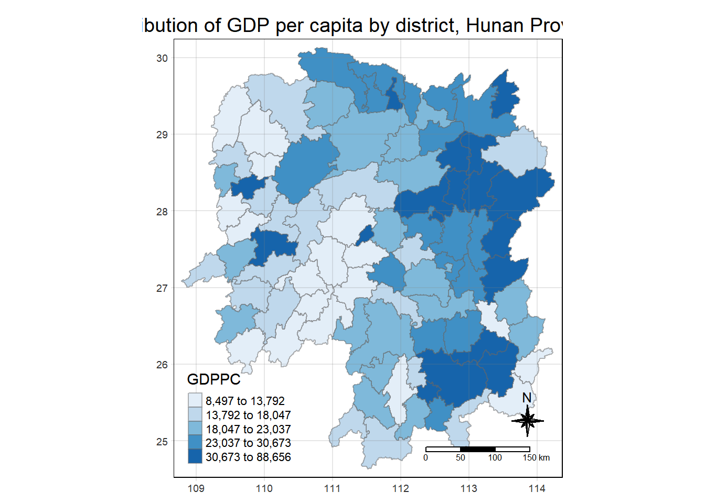

pacman::p_load(sf, tmap, sfdep, tidyverse)In-Class Exercise 6: Spatial Weights - sfdep methods
1 Overview
This in-class exercise uses an alternative R package to the spdep package used in Hands-on Ex 6, called sfdep.
2 Installing and Loading R Packages
3 Data
3.1 Importing Geospatial Data
hunan <- st_read(dsn = "data/geospatial",
layer = "Hunan")Reading layer `Hunan' from data source
`C:\gailteh\IS415-GAA\In-class_Ex\In-class_Ex06\data\geospatial'
using driver `ESRI Shapefile'
Simple feature collection with 88 features and 7 fields
Geometry type: POLYGON
Dimension: XY
Bounding box: xmin: 108.7831 ymin: 24.6342 xmax: 114.2544 ymax: 30.12812
Geodetic CRS: WGS 843.2 Importing Aspatial Data
Importing Hunan_2012.csv into a tibble data frame
hunan_2012 <- read_csv("data/aspatial/Hunan_2012.csv")3.3 Combining both data frame by using left join
In order to retain the geospatial property, the left data frame must be the sf data frame.
hunan_GDPPC <- left_join(hunan, hunan_2012) %>%
select(1:4, 7, 15)
# normally we have to specify which common field to do the join
# R is case sensitive, we need to check if the cases match (or else they will not join)
# After joining, we retain columns 1-4, 7 and 15 of the joined dataframe only3.4 Plotting a choropleth map
tmap_mode("plot")
tm_shape(hunan_GDPPC)+
tm_fill("GDPPC",
style="quantile",
palette = "Blues",
title = "GDPPC") +
tm_layout(main.title = "Distribution of GDP per capita by district, Hunan Province",
main.title.position = "center",
main.title.size = 1.2,
legend.height = 0.45,
legend.width = 0.35,
frame = TRUE) +
tm_borders(alpha = 0.5) +
tm_compass(type = "8star", size = 2) +
tm_scale_bar() +
tm_grid(alpha = 0.2)
4 Contiguity Spatial Weights
There are 2 types of spatial weights: contiguity weights and distance-based weights. In this section, we will use sfdep to derive contiguity spatial weights.
Two steps required to derive contiguity spatial weights:
Identifying contiguity neighbour list by
st_contiguity()of sfdep packageDeriving the contiguity spatial weights by using
st_weights()of sfdep package
In this section, we will learn how to derive the contiguity neighbour list and contiguity spatial weights separately. Then, we will learn how to combine both steps into a single process.
4.1 Identifying Contiguity Neighbours (Queen’s Method)
st_contiguity() derives a contiguity neighbour list using Queen’s method (queen method by default, do not need to specify)
nb_queen <- hunan_GDPPC %>%
mutate(nb = st_contiguity(geometry),
.before = 1)
# mutate creates a new field called nb which is the contiguity neighbour list
# .before = 1 will create the new field as the first columnsummary(nb_queen$nb)Neighbour list object:
Number of regions: 88
Number of nonzero links: 448
Percentage nonzero weights: 5.785124
Average number of links: 5.090909
Link number distribution:
1 2 3 4 5 6 7 8 9 11
2 2 12 16 24 14 11 4 2 1
2 least connected regions:
30 65 with 1 link
1 most connected region:
85 with 11 linksThere are 88 area units in Hunan, the most connected area has 11 neighbours, and there are 2 units with only one neighbour.
Viewing the content of the data table:
nb_queenSimple feature collection with 88 features and 7 fields
Geometry type: POLYGON
Dimension: XY
Bounding box: xmin: 108.7831 ymin: 24.6342 xmax: 114.2544 ymax: 30.12812
Geodetic CRS: WGS 84
First 10 features:
nb NAME_2 ID_3 NAME_3 ENGTYPE_3
1 2, 3, 4, 57, 85 Changde 21098 Anxiang County
2 1, 57, 58, 78, 85 Changde 21100 Hanshou County
3 1, 4, 5, 85 Changde 21101 Jinshi County City
4 1, 3, 5, 6 Changde 21102 Li County
5 3, 4, 6, 85 Changde 21103 Linli County
6 4, 5, 69, 75, 85 Changde 21104 Shimen County
7 67, 71, 74, 84 Changsha 21109 Liuyang County City
8 9, 46, 47, 56, 78, 80, 86 Changsha 21110 Ningxiang County
9 8, 66, 68, 78, 84, 86 Changsha 21111 Wangcheng County
10 16, 17, 19, 20, 22, 70, 72, 73 Chenzhou 21112 Anren County
County GDPPC geometry
1 Anxiang 23667 POLYGON ((112.0625 29.75523...
2 Hanshou 20981 POLYGON ((112.2288 29.11684...
3 Jinshi 34592 POLYGON ((111.8927 29.6013,...
4 Li 24473 POLYGON ((111.3731 29.94649...
5 Linli 25554 POLYGON ((111.6324 29.76288...
6 Shimen 27137 POLYGON ((110.8825 30.11675...
7 Liuyang 63118 POLYGON ((113.9905 28.5682,...
8 Ningxiang 62202 POLYGON ((112.7181 28.38299...
9 Wangcheng 70666 POLYGON ((112.7914 28.52688...
10 Anren 12761 POLYGON ((113.1757 26.82734...Polygon 1 has 5 neighbours, polygon numbers 2, 3, 4, 57 and 85.
Getting the county names of the neighbouring polygons:
nb_queen$County[c(2,3,4,57,85)][1] "Hanshou" "Jinshi" "Li" "Nan" "Taoyuan"4.2 Identifying Contiguity Neighbours (Rook’s Method)
nb_rook <- hunan_GDPPC %>%
mutate(nb= st_contiguity(geometry,
queen = FALSE),
.before=1)Note: Bishop method does not exist for sfdep (only in spdep)
4.3 Identifying Higher Order Neighbours
Sometimes we need to identify high order contiguity neighbours. To do this, we should use st_nb_lag_cumul().
nb2_queen <- hunan_GDPPC %>%
mutate(nb = st_contiguity(geometry),
nb2 = st_nb_lag_cumul(nb, 2),
.before = 1)
nb2_queenSimple feature collection with 88 features and 8 fields
Geometry type: POLYGON
Dimension: XY
Bounding box: xmin: 108.7831 ymin: 24.6342 xmax: 114.2544 ymax: 30.12812
Geodetic CRS: WGS 84
First 10 features:
nb
1 2, 3, 4, 57, 85
2 1, 57, 58, 78, 85
3 1, 4, 5, 85
4 1, 3, 5, 6
5 3, 4, 6, 85
6 4, 5, 69, 75, 85
7 67, 71, 74, 84
8 9, 46, 47, 56, 78, 80, 86
9 8, 66, 68, 78, 84, 86
10 16, 17, 19, 20, 22, 70, 72, 73
nb2
1 2, 3, 4, 5, 6, 32, 56, 57, 58, 64, 69, 75, 76, 78, 85
2 1, 3, 4, 5, 6, 8, 9, 32, 56, 57, 58, 64, 68, 69, 75, 76, 78, 85
3 1, 2, 4, 5, 6, 32, 56, 57, 69, 75, 78, 85
4 1, 2, 3, 5, 6, 57, 69, 75, 85
5 1, 2, 3, 4, 6, 32, 56, 57, 69, 75, 78, 85
6 1, 2, 3, 4, 5, 32, 53, 55, 56, 57, 69, 75, 78, 85
7 9, 19, 66, 67, 71, 73, 74, 76, 84, 86
8 2, 9, 19, 21, 31, 32, 34, 35, 36, 41, 45, 46, 47, 56, 58, 66, 68, 74, 78, 80, 84, 85, 86
9 2, 7, 8, 19, 21, 35, 46, 47, 56, 58, 66, 67, 68, 74, 76, 78, 80, 84, 85, 86
10 11, 14, 15, 16, 17, 18, 19, 20, 21, 22, 23, 70, 71, 72, 73, 74, 82, 83, 86
NAME_2 ID_3 NAME_3 ENGTYPE_3 County GDPPC
1 Changde 21098 Anxiang County Anxiang 23667
2 Changde 21100 Hanshou County Hanshou 20981
3 Changde 21101 Jinshi County City Jinshi 34592
4 Changde 21102 Li County Li 24473
5 Changde 21103 Linli County Linli 25554
6 Changde 21104 Shimen County Shimen 27137
7 Changsha 21109 Liuyang County City Liuyang 63118
8 Changsha 21110 Ningxiang County Ningxiang 62202
9 Changsha 21111 Wangcheng County Wangcheng 70666
10 Chenzhou 21112 Anren County Anren 12761
geometry
1 POLYGON ((112.0625 29.75523...
2 POLYGON ((112.2288 29.11684...
3 POLYGON ((111.8927 29.6013,...
4 POLYGON ((111.3731 29.94649...
5 POLYGON ((111.6324 29.76288...
6 POLYGON ((110.8825 30.11675...
7 POLYGON ((113.9905 28.5682,...
8 POLYGON ((112.7181 28.38299...
9 POLYGON ((112.7914 28.52688...
10 POLYGON ((113.1757 26.82734...If the order is 2, the result will contain both 1st and 2nd order neighbours as shown above.
5 Computing contiguity weights
Now, we will compute contiguity weights using st_weights().
5.1 Queen’s Method
wm_q <- hunan_GDPPC %>%
mutate(nb = st_contiguity(geometry),
wt = st_weights(nb,
style = "W"),
.before = 1)
# can combine the steps of creating the contiguity neighbour list together with computing the contiguity weights
# In the sfdep packageArguments in st_weights()
nb: A neighbor list object as created by st_neighbors().
style: Default “W” for row standardized weights. This value can also be “B”, “C”, “U”, “minmax”, and “S”. B is the basic binary coding, W is row standardised (sums over all links to n), C is globally standardised (sums over all links to n), U is equal to C divided by the number of neighbours (sums over all links to unity), while S is the variance-stabilizing coding scheme proposed by Tiefelsdorf et al. 1999, p. 167-168 (sums over all links to n).
allow_zero: If TRUE, assigns zero as lagged value to zone without neighbors.
wm_qSimple feature collection with 88 features and 8 fields
Geometry type: POLYGON
Dimension: XY
Bounding box: xmin: 108.7831 ymin: 24.6342 xmax: 114.2544 ymax: 30.12812
Geodetic CRS: WGS 84
First 10 features:
nb
1 2, 3, 4, 57, 85
2 1, 57, 58, 78, 85
3 1, 4, 5, 85
4 1, 3, 5, 6
5 3, 4, 6, 85
6 4, 5, 69, 75, 85
7 67, 71, 74, 84
8 9, 46, 47, 56, 78, 80, 86
9 8, 66, 68, 78, 84, 86
10 16, 17, 19, 20, 22, 70, 72, 73
wt
1 0.2, 0.2, 0.2, 0.2, 0.2
2 0.2, 0.2, 0.2, 0.2, 0.2
3 0.25, 0.25, 0.25, 0.25
4 0.25, 0.25, 0.25, 0.25
5 0.25, 0.25, 0.25, 0.25
6 0.2, 0.2, 0.2, 0.2, 0.2
7 0.25, 0.25, 0.25, 0.25
8 0.1428571, 0.1428571, 0.1428571, 0.1428571, 0.1428571, 0.1428571, 0.1428571
9 0.1666667, 0.1666667, 0.1666667, 0.1666667, 0.1666667, 0.1666667
10 0.125, 0.125, 0.125, 0.125, 0.125, 0.125, 0.125, 0.125
NAME_2 ID_3 NAME_3 ENGTYPE_3 County GDPPC
1 Changde 21098 Anxiang County Anxiang 23667
2 Changde 21100 Hanshou County Hanshou 20981
3 Changde 21101 Jinshi County City Jinshi 34592
4 Changde 21102 Li County Li 24473
5 Changde 21103 Linli County Linli 25554
6 Changde 21104 Shimen County Shimen 27137
7 Changsha 21109 Liuyang County City Liuyang 63118
8 Changsha 21110 Ningxiang County Ningxiang 62202
9 Changsha 21111 Wangcheng County Wangcheng 70666
10 Chenzhou 21112 Anren County Anren 12761
geometry
1 POLYGON ((112.0625 29.75523...
2 POLYGON ((112.2288 29.11684...
3 POLYGON ((111.8927 29.6013,...
4 POLYGON ((111.3731 29.94649...
5 POLYGON ((111.6324 29.76288...
6 POLYGON ((110.8825 30.11675...
7 POLYGON ((113.9905 28.5682,...
8 POLYGON ((112.7181 28.38299...
9 POLYGON ((112.7914 28.52688...
10 POLYGON ((113.1757 26.82734...5.2 Rook’s Method
wm_r <- hunan %>%
mutate(nb = st_contiguity(geometry, queen = FALSE),
wt = st_weights(nb),
.before = 1)
wm_rSimple feature collection with 88 features and 9 fields
Geometry type: POLYGON
Dimension: XY
Bounding box: xmin: 108.7831 ymin: 24.6342 xmax: 114.2544 ymax: 30.12812
Geodetic CRS: WGS 84
First 10 features:
nb
1 3, 4, 57, 85
2 57, 58, 78, 85
3 1, 4, 5, 85
4 1, 3, 5, 6
5 3, 4, 6, 85
6 4, 5, 69, 75, 85
7 67, 71, 74, 84
8 9, 46, 47, 56, 78, 80, 86
9 8, 66, 68, 78, 84, 86
10 16, 19, 20, 22, 70, 72, 73
wt
1 0.25, 0.25, 0.25, 0.25
2 0.25, 0.25, 0.25, 0.25
3 0.25, 0.25, 0.25, 0.25
4 0.25, 0.25, 0.25, 0.25
5 0.25, 0.25, 0.25, 0.25
6 0.2, 0.2, 0.2, 0.2, 0.2
7 0.25, 0.25, 0.25, 0.25
8 0.1428571, 0.1428571, 0.1428571, 0.1428571, 0.1428571, 0.1428571, 0.1428571
9 0.1666667, 0.1666667, 0.1666667, 0.1666667, 0.1666667, 0.1666667
10 0.1428571, 0.1428571, 0.1428571, 0.1428571, 0.1428571, 0.1428571, 0.1428571
NAME_2 ID_3 NAME_3 ENGTYPE_3 Shape_Leng Shape_Area County
1 Changde 21098 Anxiang County 1.869074 0.10056190 Anxiang
2 Changde 21100 Hanshou County 2.360691 0.19978745 Hanshou
3 Changde 21101 Jinshi County City 1.425620 0.05302413 Jinshi
4 Changde 21102 Li County 3.474325 0.18908121 Li
5 Changde 21103 Linli County 2.289506 0.11450357 Linli
6 Changde 21104 Shimen County 4.171918 0.37194707 Shimen
7 Changsha 21109 Liuyang County City 4.060579 0.46016789 Liuyang
8 Changsha 21110 Ningxiang County 3.323754 0.26614198 Ningxiang
9 Changsha 21111 Wangcheng County 2.292093 0.13049161 Wangcheng
10 Chenzhou 21112 Anren County 2.240739 0.13343936 Anren
geometry
1 POLYGON ((112.0625 29.75523...
2 POLYGON ((112.2288 29.11684...
3 POLYGON ((111.8927 29.6013,...
4 POLYGON ((111.3731 29.94649...
5 POLYGON ((111.6324 29.76288...
6 POLYGON ((110.8825 30.11675...
7 POLYGON ((113.9905 28.5682,...
8 POLYGON ((112.7181 28.38299...
9 POLYGON ((112.7914 28.52688...
10 POLYGON ((113.1757 26.82734...6 Distance-Based Spatial Weights
Now, we will learn how to derive the 2nd type of spatial weights, distance-based. There are 3 popularly used distance-based spatial weights:
Fixed Distance Weights
Adaptive Distance Weights
Inverse Distance Weights
6.1 Deriving Fixed Distance Weights
Before deriving fixed distance weights, we have to determine the upper limit for the distance band:
geo <- sf::st_geometry(hunan_GDPPC)
nb <- st_knn(geo, longlat = TRUE)
dists <- unlist(st_nb_dists(geo, nb))
Things to note
st_nb_dist()is used to calculate the nearest neighbour distance. The output is a list of distances for each observation’s neighbour listunlist()is used to return the output as a vector so that the summary statistics of the nearest neighbour distances can be derived
Now, we will go ahead to derive summary statistics of the nearest neighbour distances vector (dists)
summary(dists) Min. 1st Qu. Median Mean 3rd Qu. Max.
21.56 29.11 36.89 37.34 43.21 65.80 The maximum nearest neighbour distnace is 65.80km. By using a threshold value of 66, we will ensure that each area will have at least 1 neighbour.
Now, we will compute the fixed distance weights:
wm_fd <- hunan_GDPPC %>%
mutate(nb = st_dist_band(geometry, upper = 66),
wt = st_weights(nb),
.before = 1)
wm_fdSimple feature collection with 88 features and 8 fields
Geometry type: POLYGON
Dimension: XY
Bounding box: xmin: 108.7831 ymin: 24.6342 xmax: 114.2544 ymax: 30.12812
Geodetic CRS: WGS 84
First 10 features:
nb
1 2, 3, 4, 5, 57, 64
2 1, 57, 58, 78, 85
3 1, 4, 5, 57
4 1, 3, 5, 6
5 1, 3, 4, 6, 69
6 4, 5, 69
7 67, 71, 84
8 9, 46, 47, 78, 80
9 8, 46, 66, 68, 84, 86
10 16, 20, 22, 70, 72, 73
wt NAME_2
1 0.1666667, 0.1666667, 0.1666667, 0.1666667, 0.1666667, 0.1666667 Changde
2 0.2, 0.2, 0.2, 0.2, 0.2 Changde
3 0.25, 0.25, 0.25, 0.25 Changde
4 0.25, 0.25, 0.25, 0.25 Changde
5 0.2, 0.2, 0.2, 0.2, 0.2 Changde
6 0.3333333, 0.3333333, 0.3333333 Changde
7 0.3333333, 0.3333333, 0.3333333 Changsha
8 0.2, 0.2, 0.2, 0.2, 0.2 Changsha
9 0.1666667, 0.1666667, 0.1666667, 0.1666667, 0.1666667, 0.1666667 Changsha
10 0.1666667, 0.1666667, 0.1666667, 0.1666667, 0.1666667, 0.1666667 Chenzhou
ID_3 NAME_3 ENGTYPE_3 County GDPPC geometry
1 21098 Anxiang County Anxiang 23667 POLYGON ((112.0625 29.75523...
2 21100 Hanshou County Hanshou 20981 POLYGON ((112.2288 29.11684...
3 21101 Jinshi County City Jinshi 34592 POLYGON ((111.8927 29.6013,...
4 21102 Li County Li 24473 POLYGON ((111.3731 29.94649...
5 21103 Linli County Linli 25554 POLYGON ((111.6324 29.76288...
6 21104 Shimen County Shimen 27137 POLYGON ((110.8825 30.11675...
7 21109 Liuyang County City Liuyang 63118 POLYGON ((113.9905 28.5682,...
8 21110 Ningxiang County Ningxiang 62202 POLYGON ((112.7181 28.38299...
9 21111 Wangcheng County Wangcheng 70666 POLYGON ((112.7914 28.52688...
10 21112 Anren County Anren 12761 POLYGON ((113.1757 26.82734...
Things to note
st_dists_band()of sfdep is used to identify neighbors based on a distance band (i.e. 66km). The output is a list of neighbours (i.e. nb).st_weightsis used to calculate polygon spatial weights of the nb list. Note:default style is set to W for row standardised weights
default allow_zero is set to TRUE, assigns zero as lagged value to zones without neighbours
6.2 Deriving Adaptive Distance Weights
wm_ad <- hunan_GDPPC %>%
mutate(nb = st_knn(geometry, k = 8),
wt = st_weights(nb),
.before = 1)
wm_adSimple feature collection with 88 features and 8 fields
Geometry type: POLYGON
Dimension: XY
Bounding box: xmin: 108.7831 ymin: 24.6342 xmax: 114.2544 ymax: 30.12812
Geodetic CRS: WGS 84
First 10 features:
nb
1 2, 3, 4, 5, 57, 58, 64, 76
2 1, 3, 8, 57, 58, 68, 78, 85
3 1, 2, 4, 5, 6, 57, 64, 85
4 1, 2, 3, 5, 6, 57, 64, 69
5 1, 2, 3, 4, 6, 57, 69, 85
6 1, 2, 3, 4, 5, 69, 75, 85
7 9, 66, 67, 68, 71, 74, 84, 86
8 2, 9, 35, 46, 47, 78, 80, 86
9 8, 46, 47, 66, 68, 78, 84, 86
10 16, 17, 19, 20, 22, 70, 72, 73
wt NAME_2 ID_3
1 0.125, 0.125, 0.125, 0.125, 0.125, 0.125, 0.125, 0.125 Changde 21098
2 0.125, 0.125, 0.125, 0.125, 0.125, 0.125, 0.125, 0.125 Changde 21100
3 0.125, 0.125, 0.125, 0.125, 0.125, 0.125, 0.125, 0.125 Changde 21101
4 0.125, 0.125, 0.125, 0.125, 0.125, 0.125, 0.125, 0.125 Changde 21102
5 0.125, 0.125, 0.125, 0.125, 0.125, 0.125, 0.125, 0.125 Changde 21103
6 0.125, 0.125, 0.125, 0.125, 0.125, 0.125, 0.125, 0.125 Changde 21104
7 0.125, 0.125, 0.125, 0.125, 0.125, 0.125, 0.125, 0.125 Changsha 21109
8 0.125, 0.125, 0.125, 0.125, 0.125, 0.125, 0.125, 0.125 Changsha 21110
9 0.125, 0.125, 0.125, 0.125, 0.125, 0.125, 0.125, 0.125 Changsha 21111
10 0.125, 0.125, 0.125, 0.125, 0.125, 0.125, 0.125, 0.125 Chenzhou 21112
NAME_3 ENGTYPE_3 County GDPPC geometry
1 Anxiang County Anxiang 23667 POLYGON ((112.0625 29.75523...
2 Hanshou County Hanshou 20981 POLYGON ((112.2288 29.11684...
3 Jinshi County City Jinshi 34592 POLYGON ((111.8927 29.6013,...
4 Li County Li 24473 POLYGON ((111.3731 29.94649...
5 Linli County Linli 25554 POLYGON ((111.6324 29.76288...
6 Shimen County Shimen 27137 POLYGON ((110.8825 30.11675...
7 Liuyang County City Liuyang 63118 POLYGON ((113.9905 28.5682,...
8 Ningxiang County Ningxiang 62202 POLYGON ((112.7181 28.38299...
9 Wangcheng County Wangcheng 70666 POLYGON ((112.7914 28.52688...
10 Anren County Anren 12761 POLYGON ((113.1757 26.82734...
Things to Note
st_knn() is used to identify neighbours based on k. k indicates the nearest k neighbours. The outpur is a list of neighbours (nb)
6.3 Deriving Inverse Distance Weights
wm_idw <- hunan_GDPPC %>%
mutate(nb = st_contiguity(geometry),
wts = st_inverse_distance(nb, geometry,
scale = 1,
alpha = 1),
.before = 1)
wm_idwSimple feature collection with 88 features and 8 fields
Geometry type: POLYGON
Dimension: XY
Bounding box: xmin: 108.7831 ymin: 24.6342 xmax: 114.2544 ymax: 30.12812
Geodetic CRS: WGS 84
First 10 features:
nb
1 2, 3, 4, 57, 85
2 1, 57, 58, 78, 85
3 1, 4, 5, 85
4 1, 3, 5, 6
5 3, 4, 6, 85
6 4, 5, 69, 75, 85
7 67, 71, 74, 84
8 9, 46, 47, 56, 78, 80, 86
9 8, 66, 68, 78, 84, 86
10 16, 17, 19, 20, 22, 70, 72, 73
wts
1 0.01526149, 0.03515537, 0.02176677, 0.02836978, 0.01029857
2 0.01526149, 0.01601100, 0.01911052, 0.02327058, 0.01591694
3 0.03515537, 0.04581089, 0.04116397, 0.01208437
4 0.02176677, 0.04581089, 0.04637578, 0.01585302
5 0.04116397, 0.04637578, 0.01896212, 0.01351099
6 0.01585302, 0.01896212, 0.02710909, 0.01140718, 0.01080890
7 0.01621067, 0.01536702, 0.01133628, 0.01836488
8 0.01930410, 0.02675555, 0.02151751, 0.01076895, 0.02608065, 0.01519804, 0.01337412
9 0.01930410, 0.01651371, 0.01798519, 0.01473155, 0.03015561, 0.01612293
10 0.02737233, 0.01390810, 0.01458881, 0.02156771, 0.02419268, 0.02350470, 0.01784174, 0.01621545
NAME_2 ID_3 NAME_3 ENGTYPE_3 County GDPPC
1 Changde 21098 Anxiang County Anxiang 23667
2 Changde 21100 Hanshou County Hanshou 20981
3 Changde 21101 Jinshi County City Jinshi 34592
4 Changde 21102 Li County Li 24473
5 Changde 21103 Linli County Linli 25554
6 Changde 21104 Shimen County Shimen 27137
7 Changsha 21109 Liuyang County City Liuyang 63118
8 Changsha 21110 Ningxiang County Ningxiang 62202
9 Changsha 21111 Wangcheng County Wangcheng 70666
10 Chenzhou 21112 Anren County Anren 12761
geometry
1 POLYGON ((112.0625 29.75523...
2 POLYGON ((112.2288 29.11684...
3 POLYGON ((111.8927 29.6013,...
4 POLYGON ((111.3731 29.94649...
5 POLYGON ((111.6324 29.76288...
6 POLYGON ((110.8825 30.11675...
7 POLYGON ((113.9905 28.5682,...
8 POLYGON ((112.7181 28.38299...
9 POLYGON ((112.7914 28.52688...
10 POLYGON ((113.1757 26.82734...
Things to note
st_contiguity identifies the neighbours using contiguity criteria, the output is a list of neighbours.